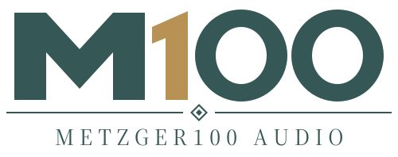
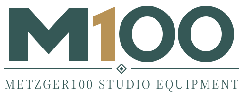

PREVIOUS
Metzger100 Microphones
A microphone-only manufacturer subline.
Open outlined SVGBrand name selected · 5 October 2026
Selected full name: METZGER100 AUDIO WORKS. Keep the existing M100 mark, mountain, beard and colours. Audio electronics & acoustics. Use M100 + family + equipment identifier + technical variant, with a plain functional descriptor explaining what each device does.
Read the naming decisionExtended families and model naming proposalBrand guideAll artwork and backgrounds
PREVIOUS
A microphone-only manufacturer subline.
Open outlined SVGSELECTED

Independent workshop identity across audio equipment.
Open outlined SVGEARLIER PROPOSAL

The shorter name considered before Audio Works.
Open outlined SVGALTERNATIVE

Explicit scope, with a longer name.
Open outlined SVGConceptual identity placements. The scope includes microphones, preamps, amplifiers, loudspeakers and other audio equipment; future projects, names and technical variants remain open.
Condenser microphone
Analog microphone preamp
Audio interface
The horizontal wordmark suits electronics panels. The tall badge remains useful on microphone bodies and vertical markings. Functional labels should stay easy to read.
Suggested tagline. Precision and repairability belong to the whole brand; warmth or coloration belongs in each product's design brief. The Art Deco character stays in the identity.
New single-colour production treatment: the existing M100 contours in one ink, for panel printing, engraving and PCB marking. Full-colour SVG background rules remain in the artwork guide.